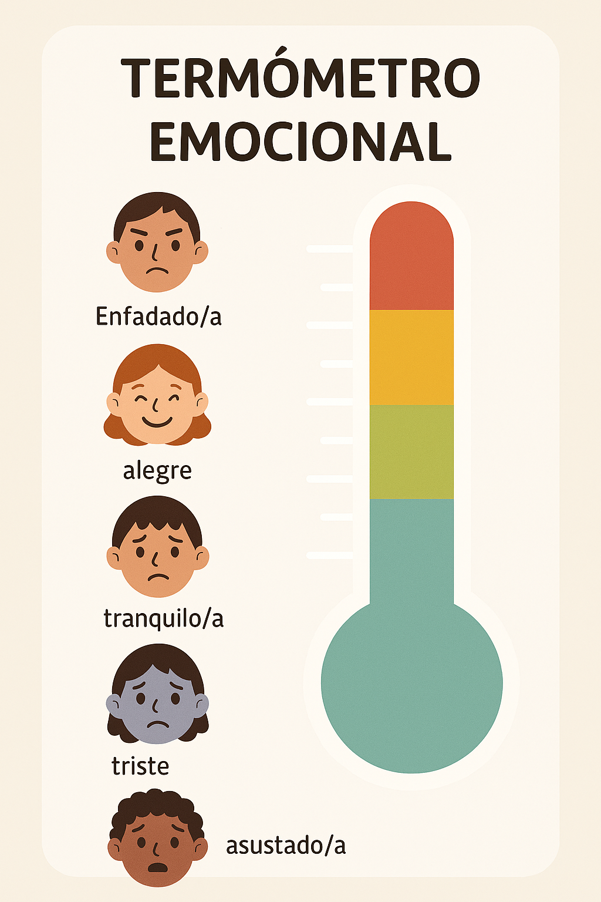

Exploramos nuestras emociones
Objetivo: Identificar y expresar emociones básicas a través de dinámicas grupales, escucha activa y creación artística.
1. Acogida y termómetro emocional (10 minutos)
- Actividad: Cada alumno y alumna coloca su avatar en el termómetro emocional según cómo se sienten.
- Materiales: Ficha del termómetro, tijeras y pegamento.
- Propósito: Visualizar el estado general del grupo y fomentar la empatía.
2. Lluvia de ideas sobre emociones (10 minutos)
- Actividad: En grupo se nombran emociones básicas (alegría, sorpresa, miedo, enfado, tristeza) y se comentan ejemplos.
- Apoyo visual: Tarjetas con expresiones faciales o emojis.
- Propósito: Ampliar el vocabulario emocional y conectar con experiencias personales.
3. Escucha de fragmento breve de podcast.
- Actividad: Escuchar el podcast infantil Celos: El monstruo verde.
- Propósito: Desarrollar la escucha activa y la comprensión emocional.
4. Mural colectivo emocional (15 minutos)
- Actividad: Cada alumno y alumna al zar escoge una emoción que tiene que escribir o dibujar en una cartulina grande común para todos, decorándola con colores o símbolos.
- Materiales: Cartulina, rotuladores y pegatinas.
- Propósito: Crear un recurso visual que acompañe el proyecto y refuerce el vocabulario emocional.